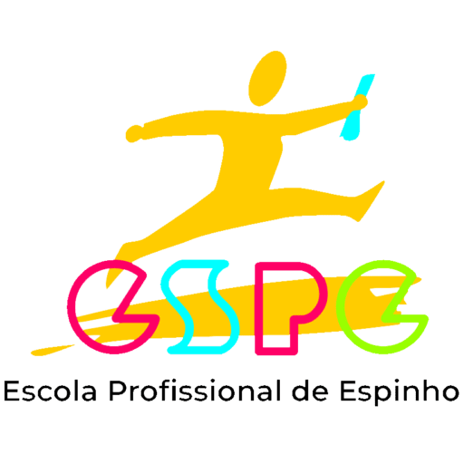
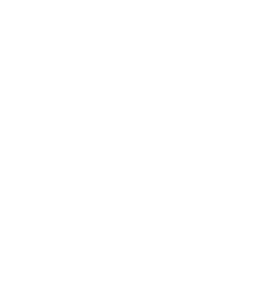
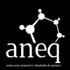
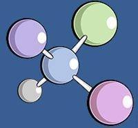
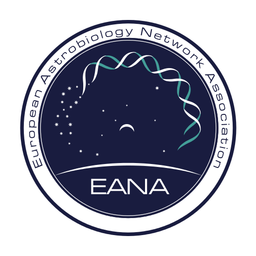

Gustavo Pinho Maia
Research on mechanochemical and shock-driven synthesis of organic molecules relevant to prebiotic chemistry and the origin of life.
Education

Mechanochemical energy and prebiotic synthesis
My PhD research focuses on understanding how mechanochemical energy—the energy generated from mechanical forces such as grinding, milling, and impact—can drive the synthesis of prebiotic organic molecules. This work explores alternative pathways for the origin of life that don't rely solely on aqueous chemistry.
The research investigates shock-driven chemistry under planetary conditions, simulating impact events that would have occurred on early Earth and other celestial bodies. By studying these high-energy processes, we aim to understand how the building blocks of life could have formed in extreme environments.
This interdisciplinary work combines synthetic chemistry, analytical techniques, computational modeling, and astrobiological perspectives to address fundamental questions about chemical evolution and the conditions that led to the emergence of life.
Techniques & Equipment
Core tasks: mechanochemical synthesis and impact simulation, sample preparation and recovery, chromatographic separation and quantification, structural and elemental characterization, and interpretation of analytical data.
Mechanochemistry
Chromatography
Elemental Analysis
X-Ray Diffraction
Infrared Spectroscopy
Electron Microscopy
Isotope Analysis


Ribonucleoside stability and prebiotic synthesis
Optimization of quinoline N-oxide synthesis

Fully automated robot for Rescue Line Competition (RoboCupJunior)
This program focused on advanced mechatronics and robotics skills. The main project was the design and construction of a fully autonomous robot capable of following a line and performing tasks in the Rescue Line competition at RoboCupJunior.
The project required integrating sensors, motors, and controllers, programming autonomous navigation, and testing the robot in simulated rescue environments. This hands-on experience gave practical skills in electronics, programming, robotics design, and teamwork.
Techniques & Equipment
Core tasks: sensor and actuator integration, control programming, autonomous navigation, and prototype testing.
Electronics
Programming


Experience

Collaborative research at MNHN focusing on mechanochemical synthesis, sample analysis, and astrobiology methods.


Foundations of astrobiology

Oversaw fiscal compliance, audited financial statements, and coordinated council meetings.

Assisted the president and managed organizational activities for the student chemistry association.


Conducted laboratory research on chemical synthesis under the supervision of faculty researchers.

Represented the student body, conveyed concerns, and organized class activities and discussions.
Presentations & Talks
Mechanochemical processing of organic matter in small bodies
Mechanochemical pathways in extraterrestrial environments

Astrobiology and mechanochemistry
Impact-driven processing of organic matter in space
Shock processes and organic survival
Experimental simulations of impact chemistry
Impact-driven prebiotic chemistry
From impacts to prebiotic chemistry
Mechanochemistry and meteoritic organics
Prebiotic nucleoside chemistry
Early-stage research presentation
Publications
Synced automatically from ORCID — peer-reviewed papers only.
Click to view abstract
Click to view abstract
Click to view abstract
Cientifica(mente)
🇵🇹 Em portuguêsQuímica não precisa de ser decorada — precisa de ser compreendida.
A minha abordagem centra-se em ajudar os alunos a entenderem verdadeiramente como e porquê as reações químicas acontecem, desenvolvendo o bom senso químico essencial para pensar e raciocinar como um químico. O percurso começa pelos fundamentos da química, abordando ligações químicas, estrutura molecular e a relação entre estrutura e propriedade, e evolui de forma lógica para a estereoquímica e para os principais tipos de reações em química orgânica, como substituições, eliminações e adições. As aulas são personalizadas às necessidades de cada aluno, promovendo o pensamento crítico, a curiosidade científica e uma compreensão sólida e duradoura da matéria, com impacto direto no desempenho académico e na confiança perante a disciplina.
Precisas de ajuda? Fala comigo!